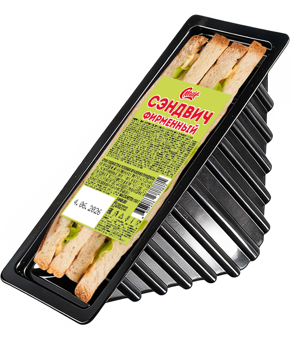

Сэндвич Фирменный

Состав:
тостовый хлеб, колбаса в/к, соус, капуста пекинская.
Масса нетто:
150 г.
Пищевая и энергетическая ценность в 100 г продукта (средние значения):
Белки
– 6,7 г.
Жиры
– 25,2 г.
Углеводы
– 12,0 г.
Калорийность
– 365 ккал / 1530 кДж.
Закрыть окно